分享人：孟晨
目录
1.背景介绍
2.知识剖析
3.常见问题
4.解决方案
5.编码实战
6.扩展思考
7.参考文献
8.更多讨论
在全局环境里面，this 永远指向 window，因此在全局环境里作为普通函数被调用的时候，this 也是指向 window。
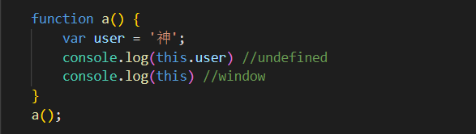这里调用了a函数，而a函数的执行环境是全局环境，这里的this也就指向了全局变量window。
在全局环境里面，this 永远指向 window，因此在全局环境里作为普通函数被调用的时候，this 也是指向 window。
先来个总结：如果函数作为一个对象的属性方法，并且被调用的时候，那么这个属性方法中的this 就指向这个对象，来看代码：
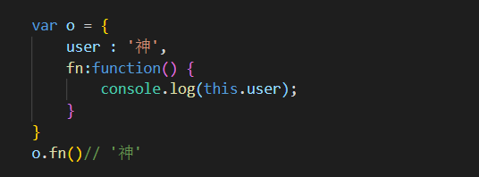这里出现的结果与上面相同，因为this指向它的直接上级
稍微复杂一点的情况
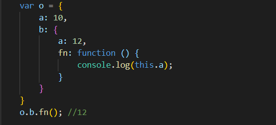这里同样也是对象o点出来的，但是同样this并没有执行它
通过以上例子可以有一下结论
情况1：如果一个函数中有this，但是它没有被上一级的对象所调用，那么this指向的就是window.
情况2：如果一个函数中有this，这个函数有被上一级的对象所调用，那么this指向的就是上一级的对象。
情况3：如果一个函数中有this，这个函数中包含多个对象，尽管这个函数是被最外层的对象所调用，this指向的也只是它上一级的对象，
但是还有一个特殊的例子
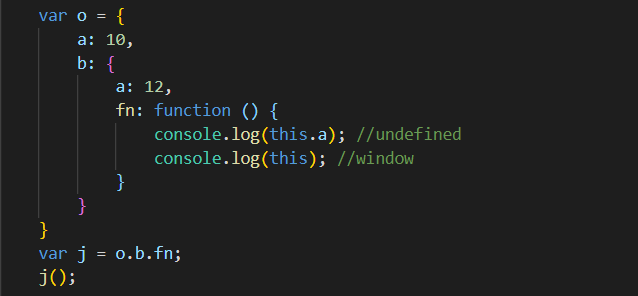？这里this指向的还是window
想要明白为什么还需要理解一句话
即this永远指向的是最后调用它的对象
也就是看它执行的时候是谁调用的，虽然函数fn是被对象b所引用，但是在将fn赋值给变量j的时候并没有执行所以最终指向的是window，这和之前例子是不一样的，之前是直接执行了fn。
作为构造函数被调用的时候，this 代表它即将 new 出来的对象;
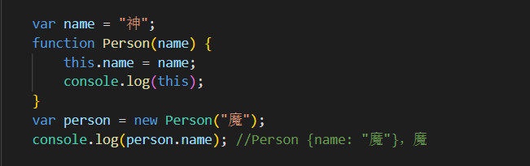如果不加 new,表示即作为普通函数调用，指向 window。
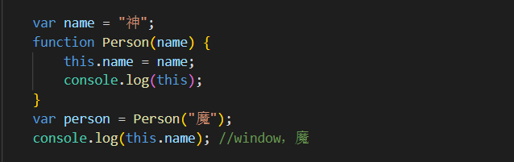因为this指向window，this.name=name,window下的name神被替换为魔
作为 call/apply/bind 方法被调用的时候指向传入的值。
元素绑定事件，事件触发后，执行的函数中的this 指向的是当前元素（标签）
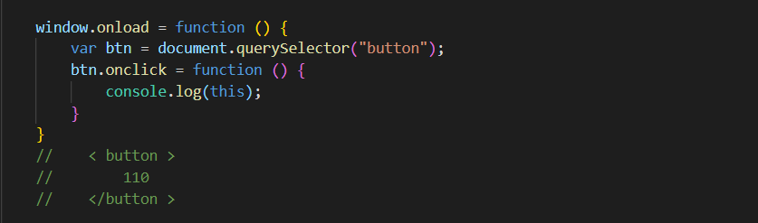如果返回值是一个对象，那么this指向的就是那个返回的对象，如果返回值不是一个对象那么this还是指向函数的实例。
虽然null,undefind也是对象，但是在这里this还是指向那个函数的实例，因为null,undefind比较特殊。
可以看看例子
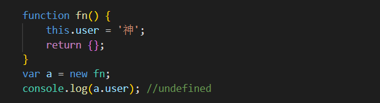 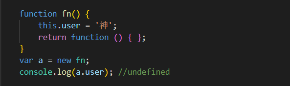再来2个
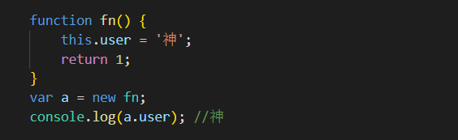 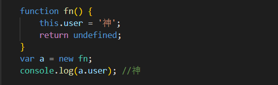然后有个较为特殊的就是null虽然也是对象，但表现出来的是这样的
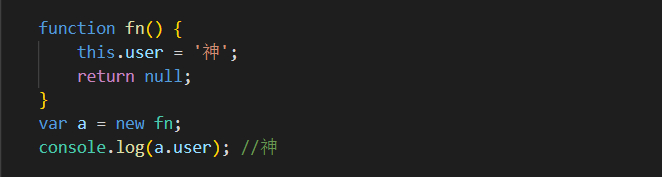如何改变this的指向？
setTimeout、setInterval中的this是指向哪里？
如何改变this的指向？
可以使用call或者apply的方法改变指向
如果xxxx.call(a)，this就指向a；当a为null或者undefined的时候，会指向window； 假如说要传参，构造函数名.call("a","b",“c”)，它的第一个参数传到的是this；apply类似，但是与之不同的是，要书写成： 构造函数名.apply("a",["b"，"c"])的形式，这就是差别；
可以看一看例子
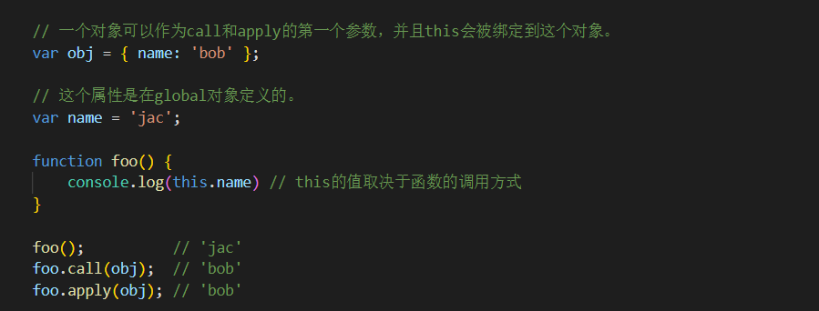setTimeout、setInterval中的this是指向哪里？
《 javascript 高级程序设计》中写到：“超时调用的代码都是在全局执行域中执行的”。setTimeout/setInterval 执行的时候，this 默认指向 window 对象，除非手动改变 this 的指向。
还是看一看例子
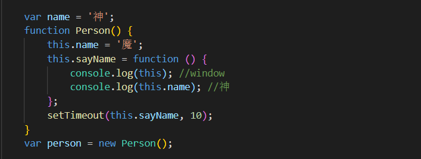之前说过，如果直接执行回调函数而没有绑定作用域，那么它的'this'是指向全局对象('window')，在严格模式下会指向'undefined'，然而在'setTimeout'中的回调函数在严格模式下却表现出不同
看看例子
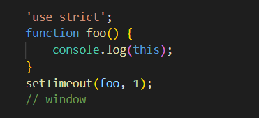感谢大家观看
BY : 孟晨